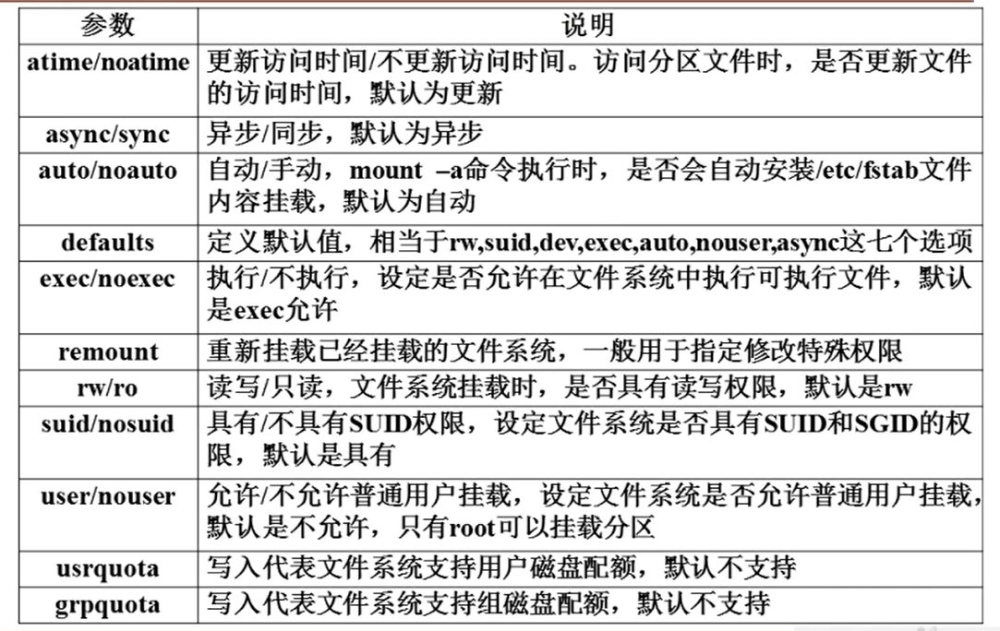
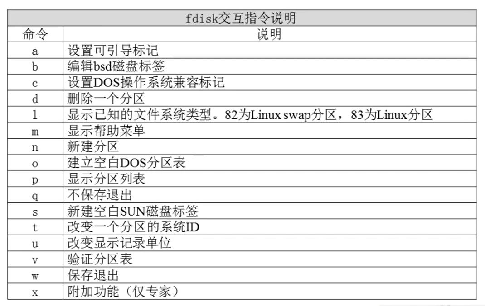

# 文件系统管理
# 回顾分区和文件系统
# 分区类型
- 主分区：总共最多只能分四个
- 扩展分区：只能由一个，也算作主分区的一种，也就是说主分区加扩展分区最多有四个。但是扩展分区不能存储数据和格式化，必须再划分成逻辑分区才能使用。
- 逻辑分区：逻辑分区是再扩展分区中划分的，如果是 IDE 硬盘，Linux 最多支持 59 个逻辑分区，如果是 SCSI 硬盘 Linux 最多支持 11 个逻辑分区
# 文件系统
- ext2：是 ext 文件系统的升级版本，Red Hat Linux7.2 版本以前的系统默认都是 ext2 文件系统。1993 年发布，最大支持 16TB 的分区和最大 2TB 的文件
- ext3：ext3 文件系统是 ext2 文件系统的升级版本，最大的区别就是带日志功能，以在系统突然停止时提高文件系统的可靠性。最大支持 16TB 的分区和最大 2TB 的文件
- ext4：它是 ext3 文件系统的升级版。ext4 在性能、伸缩性和可靠性方面进行了大量改进。ext4 的改变可以说是翻天覆地的，比如向下兼容 ext3、最大 1EB 文件系统和 16TB 文件、无限数量子目录、Extents 连续数据块概念、多块分配、延迟分配、持久预分配、快速 FSCK、日志校验、无日志模式、在线碎片整理、inode 增强、默认启用 barrier 等。是 CentOS 6.3 的默认文件系统（1EB=1024PB=1024*1024TB）
- xfs：…
# 文件系统的常用命令
# df 命令、du 命令、fsck 命令和 dump2fs 命令
文件系统查看命令 df
语法： di [选项] [挂载点]
选项：
-a 显式所有的文件系统信息，包括特殊文件系统，如 /proc、/sysfs
-h 使用习惯单位显示容量，如 KB，MB 或 GB 等
-T 显示文件类型系统
-m 以 MB 为单位显示容量
-k 以 KB 为单位显示容量。默认就是以 KB 为单位
统计目录或者文件大小
语法： du [选项] [目录或文件名]
选项：
-a 显示每个子文件的磁盘占用量。默认只统计子目录的磁盘占用量
-h 使用习惯单位显示磁盘占用量，如 KB，MB 或 GB 等
-s 统计总占用量，而不列出子目录和子文件的占用量
du 命令和 df 命令的区别
- df 命令是从文件系统考虑的，不光要考虑文件占用的空间，还要统计被命令或程序占用的空间（最常见的就是文件已经删除，但是程序并没有释放空间）
- du 命令是面向文件的，只会计算文件或目录占用的空间
文件系统修复命令 fsck
语法： fsck [选项] 分区设备文件名
选项：
-a：不用显示用户提示，自动修复文件系统
-y：自动修复。和 - a 作用一致，不过有些文件系统只支持 - y
显示磁盘状态命令 dumpe2fs
语法： dumpe2fs 分区设备文件名
# 挂载命令
查询与自动挂载
语法： mount [-l]
#查询系统只已经挂载的设备，-l 会显示卷标名称
语法： mount -a
#依据配置文件 /etc/fstab 的内容，自动挂载
挂载命令格式
语法： mount [-t 文件系统] [-L 卷标名] [-o 特殊选项] 设备文件名 挂载点
选项：
-t 文件系统：加入文件系统类型来指定挂载的类型，可以 ext3、ext4、iso9660 等文件系统
-L 卷标名：挂载指定卷标的分区，而不是安装设备文件名挂载
-o 特殊选项：可以指定挂载的额外选项

# 挂载光盘与 U 盘
挂载光盘
[root@localhost ~]# mkdir /mnt/cdrom/
#建立挂载点
[root@localhost ~]# mount -t iso9660 /dev/cdrom /mnt/cdrom/
[root@localhost ~]# mount /dev/sr0 /mnt/cdrom/
卸载命令
[root@localhost ~]# umount 设备文件名或挂载点
[root@localhost ~]# umount /mnt/cdrom
挂载 U 盘
[root@localhost ~]# fdisk -l
# 查看U盘设备文件名
[root@localhost ~]# mount -t vfat /dev/sdb1 /mnt/usb/
注意：Linux 默认是不支持 NTFS 文件系统的
# 支持 NTFS 文件系统
略
# fdisk 分区
# fdisk 命令分区过程
查看新硬盘
语法： fdisk -l
使用 fdisk 命令分区
语法： fdisk /dev/sdb

重新读取分区表信息
语法： partprobe
格式化分区
语法： mkfs -t ext4 /dev/sdb1
# 分区自动挂载
/etc/fstab 文件
- 第一字段：分区设备文件名或 UUID（硬盘通用唯一识别码）
- 第二字段：挂载点
- 第三字段：文件系统名称
- 第四字段：挂载参数
- 第五字段：指定分区是否被 dump 备份，0 代表不备份，1 代表每天备份，2 代表不定期备份
- 第六字段：指定分区是否被 fsck 检测，0 代表不检测，其他数字代表检测的优先级，那么当然 1 的优先级比 2 高
# /etc/fstab 文件修复
语法： mount -o remount,rw /
# 分配 swap 分区
free 命令
语法： free
#查看内存与 swap 分区使用情况
- cached（缓存）：是指把读取出来的数据保存在内存当中，当再次读取时，不用读取硬盘而直接从内存当中读取，加速了数据的读取过程
- buffer（缓冲）：是指在写入数据时，先把分散的写入操作保存到内存当中，当达到一定程度再集中写入磁盘，减少了磁盘碎片和磁盘的反复寻道，加速了数据的写入过程
新建 swap 分区
语法： fdisk /dev/sdb
别忘记把分区 ID 改为 82
格式化
语法： mkswap /dev/sdb6
加入 swap 分区
[root@localhost ~]# swapon /dev/sdb6
#加入swap分区
[root@localhost ~]# swapoff /dev/sdb6
#取消swap分区
swap 分区开机自动挂载
[root@localhost ~]# vim /etc/fstab